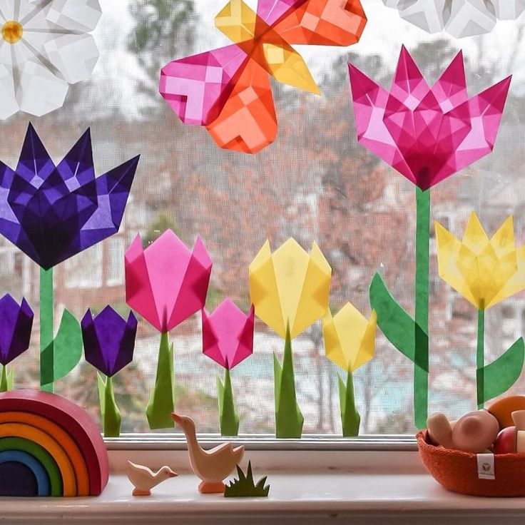

About
I am Quynh Nhu from Vietnam. I am a seasoned professional with experience in property management and operations, specializing in customer care and management.
With academic credentials and practical experience, I am seeking opportunities to advance my career in the field of data analysis, particularly in customer management data analysis.
Work
1️⃣ 2015-2018: My initial role entailed serving as a receptionist and administrative assistant at the office building of CJ Corporation, a Korean conglomerate, in Ho Chi Minh City. During this period, I demonstrated adept communication skills in interactions with both clients and internal management teams. Additionally, I efficiently conveyed client requests to the internal team and ensured that all requirements were meticulously tracked and fulfilled.
After one year of dedicated service, I was promoted to a permanent position within the building operations management team, assuming the role of Contract Management Officer. In this capacity, my responsibilities encompassed liaising with subcontractors throughout various stages of the procurement process, from drafting tender documents to contractor selection, contract term review, and ongoing monitoring to ensure compliance with contractual obligations.2️⃣ 2019: I served as an Assistant Building Manager at Lim Tower, located in the central district of Ho Chi Minh City. This role afforded me the opportunity to cultivate skills in managing various subcontractors responsible for security and sanitation services. These subcontractors played a pivotal role in maintaining the daily service quality within the building.
3️⃣ 2020: In 2020, driven by a desire to deepen my engagement with client relations, I transitioned to the role of Customer Relationship Officer at mPlaza, under the management of Mapletree, a prominent real estate investment trust based in Singapore. Operating within a larger organizational framework, my responsibilities extended beyond client communication and care. They encompassed team management, including overseeing the reception staff, managing personnel involved in tenant account monitoring, and directly supervising coordination efforts between the building management, tenants, and local authorities.
Life
üìñ I graduated with a Bachelor's degree in Hospitality Administration/Management from Hoa Sen University. After three years of graduation, I made the decision to pursue an MBA program in partnership with the University of Northampton, UK, to further enhance my management skills. Subsequently, in 2023, with a keen interest in staying abreast of data trends, I opted to pursue further education in data analysis at Coderschool. I believe this will significantly augment my data analysis skills, which I trust will advance my career prospects in the future.
üé∂ In my free time, I love watercolor painting, knitting and spending tim with my family.
Projects

Scientific Report: Data Analysis on Dogs’ Behaviours (Matlab)
It can be seen in daily life that similar to human beings, canines also have emotions, but it is not clear whether each of them shows their emotions differently and whether they are jealous or not. This project explores how different dogs of different genders would behave when they are ignored by their owners based on the data taken from the studies of Prato-Previde et al. (2018). The results revealed that female dogs were more connected with their owners, while male dogs focused more on strangers and the environment.
Article Post CodeThesis: Fake GPS Detection (ML/AI)
Due to the high competition and attractive bonuses, many GOJEK drivers use Fake GPS applications to spoof their locations. To detect those spoofing cases with the public dataset, this project suggested machine learning algorithms, including Logistic Regression, Decision Tree and Random Forest. After being evaluated based on specificity and accuracy, Decision Tree was selected as the best. Further research can use this as a location spoofing detection example.
Video Slides Thesis CodeGeolocation Technology Analysis (GIS)
Location tracking methods such as IP address, Wi-Fi signals, GPS, and GSM are essential for various software and businesses. A report utilising ArcGIS and visualisation tools assesses the accuracy, reliability, and coverage of these methods, finding GPS to be the most accurate and IP address the least. However, the choice of method depends on the specific tracking needs, highlighting the importance of using a "fit-for-purpose" approach. Please contact me if you need access to the report. Thank you.
ReportBanking Advanced Authentication System
Account takeover happens quite regularly these days. Safruti (2022) mentioned on Forbes that billions of credentials from social media networks, e-commerce sites and financial applications were stolen and sold on the internet. In banking, the threat is even more severe as the loss would be a significant amount of money. To prevent fraud in banking, especially in cases where scammers log into a bank account and spend money illegally, the Account Takeover Detection System is proposed to automatically identify the suspicious login and block the account immediately, so that further fraud activities would not occur.

Skills

Python

Presentation